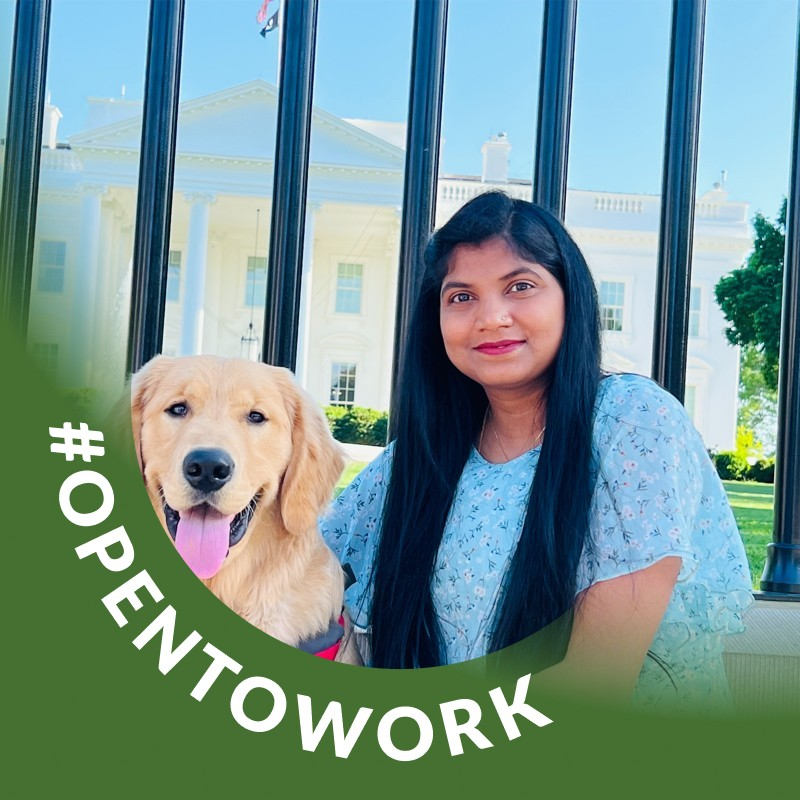

Manju Lata Singh
QA Lead | Business Analyst | Test Automation Engineer
12+ years delivering functional, API, performance, security, and Section 508 accessibility testing for federal and enterprise programs.
About
What I bring to the table.
I am a QA and test engineering professional with 12+ years delivering functional, API, performance, security, and Section 508 accessibility testing for federal and enterprise programs. I currently serve in a dual QA Lead / Business Analyst role at the National Science Foundation, coordinating integration and release validation across internal teams and third-party vendors.
I build and maintain automation suites in Selenium, Cucumber, and Ready API wired into Jenkins, and I translate business requirements into traceable test strategies from user story through UAT sign-off.
Core competencies
Tools and practices I use every day.
-
Test Automation
Selenium WebDriver, Cucumber (BDD), JBehave, Ready API, SoapUI, Parasoft, Appium, HP QTP
-
Performance & Security
Rational Performance Test (RPT), JMeter, LoadRunner, HCL AppScan, Ready API endpoint security
-
Accessibility (Section 508)
SortSite, Lighthouse, Dragon NaturallySpeaking, WCAG validation
-
Mobile Testing
Appium (Android/iOS), Calabash-Android, Android SDK, emulators, simulators, real devices
-
Languages & Scripting
Java, Groovy, Ruby, Gherkin, JavaScript, VBScript, SQL, PL/SQL, HTML
-
CI/CD & Build
Jenkins, Maven, Git, SVN, JUnit, TestNG
-
Test & Project Management
JIRA, Rally (CA Agile Central), ALM / Quality Center, RTM, Smart Test Manager
-
Databases & Monitoring
Oracle 9i/10g, Postgres, Sybase, SQL Server, Elasticsearch, Kibana (ELK)
-
AI-Assisted Engineering
Amazon Q for Selenium automation authoring and code productivity
Experience
Roles that shaped how I lead QA and business analysis.
-

- Lead end-to-end testing and business requirement alignment across NSF applications and third-party vendor systems, serving as the single point of accountability for release quality.
- Coordinate daily with vendor application teams, cross-functional groups, and client stakeholders on integration, API, performance, service recovery, and security validation.
- Identify impacted systems for each release and convene the owning teams so integration testing covers every interface collectively rather than in isolated silos.
- Drive performance testing readiness — aligning stakeholders, engaging monitoring teams, and confirming environments and prod-like data are in place before load and stress runs.
- Design and execute manual and automated suites using Selenium, Ready API, Rational Performance Test, and Jenkins, improving coverage and cycle efficiency across releases.
- Own defect triage and troubleshooting, coordinating resolution across application, infrastructure, and testing teams.
- Produce key release artifacts: UAT packages, ITHC briefs, DIS testing summaries, and Release Readiness decks.
- Facilitate UAT/ITHC sessions, manage client validation, and ensure compliance with federal release standards.
- Support release-night validation and post-deployment production checks.
-
- Partnered with business analysts and developers to review requirements, designs, and test plans, providing effort estimates and consolidated test reports.
- Executed functional, regression, integration, cross-browser, performance, security, and Section 508 compliance testing.
- Automated regression coverage with JBehave, Selenium, and Jenkins; monitored and maintained the automation suite on a daily schedule.
- Recorded performance scripts and captured response-time baselines using RPT; ran security scans with HCL AppScan and Ready API endpoint testing.
- Built and maintained the requirements traceability matrix mapping user stories to test cases and defects.
- Led integration testing efforts, coordinated participating teams, and onboarded new QA members.
- Tracked and remediated accessibility findings using SortSite; supported client UAT and defect reporting.
-
- Analyzed requirements and authored manual and automated test cases using Java, Selenium, Groovy, Cucumber, Ready API, and Maven, integrated into Jenkins.
- Prepared test plans with documented risks and mitigation strategies; maintained traceability from requirement to test case to defect.
- Participated in daily scrums, sprint planning, and retrospectives, collaborating with developers and analysts to define system capabilities and interfaces.
- Coordinated web component deployments, maintained support documentation, and troubleshot production issues.
- Reported test progress, coverage, and defect metrics to project leadership.
-
- Developed and executed automation scripts in Java, Groovy, and Cucumber, orchestrated through Jenkins.
- Defined the QA strategy aligned to business goals and documented QA processes for the program.
- Built tooling for SOAP XML validation and supported service migration from SOAP to REST.
- Developed Selenium scripts for GUI testing and delivered customized client-facing reports.
- Managed suite execution, defect tracking, and reporting using Parasoft, SoapUI, and Kibana (ELK).
-
- Built an automation framework from scratch in Selenium for web application testing.
- Supported Verizon IoT device testing, validating functionality across devices and platforms.
- Engaged directly in client discussions to clarify requirements, operating as a hybrid BA/QA.
- Analyzed specifications for manual and automated testing of web applications and REST APIs.
- Authored test plans covering dependencies, risks, and mitigation; ensured full traceability of requirements to results.
- Mentored new team members and delivered training on testing processes.
-
- Analyzed requirements and supported development of web and mobile applications.
- Designed test strategies and evaluated tooling options for the engagement.
- Wrote automated scripts using Selenium WebDriver within a hybrid framework.
- Tested mobile applications with Calabash and Appium; generated execution reports via Calabash-Android and Cucumber.
-
- Executed mobile automation and functional testing for broadcast platform releases.
-
- Delivered functional and regression testing across telecom IT systems in an Agile delivery model.
Education
Bachelor of Technology, Information Technology
India
Contact
Let’s connect.
-
Location
Ashburn, Virginia -
Email
manjulata.singh3@gmail.com -
LinkedIn
linkedin.com/in/manjulatasingh -
Blog
medium.com/@manjulatasingh -
Resume
Download PDF